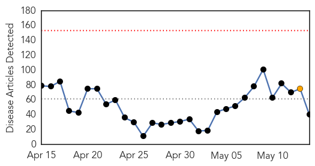
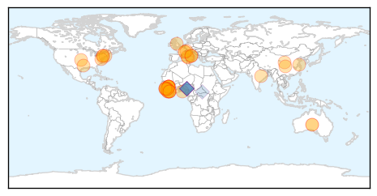
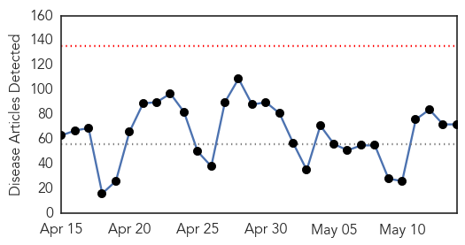

Ebola
30-Day Web Trend
0 alerts, 1 warnings

30-Day Twitter Trend
0 alerts, 0 warnings
Article Locations
Article Confidences

Top Articles:
- 1.000
- Ebola not mutating beyond 'normal' rate, scientists say
- 1.000
- Patient at UConn Health Center tests negative for Ebola
- 1.000
- Nurse Returning from Sierra Leone Is First Ebola Case Diagnosed in Italy
- 1.000
- Lessons from Nigeria on Ebola
- 1.000
- Denver Journal of International Law and Policy
- 1.000
- Ebola outbreak in Sierra Leone: reflections on clinical and research involvement
- 0.999
- Baptist leader celebrates Ebola-free Liberia
- 0.999
- First confirmed Ebola case in Italy
- 0.999
- Genomics laboratory capability in Liberia supports Ebola virus outbreak response
- 0.999
- Genomics laboratory capability in Liberia supports Ebola virus outbreak response
- 0.999
- Italian nurse positive for Ebola not in critical conditions --China Economic Net
- 0.998
- First confirmed Ebola patient in Italy
- 0.998
- Patient in Connecticut Tests Negative for Ebola
- 0.998
- Think Again: Why did Liberia beat Ebola before Guinea or Sierra Leone? - Liberia
- 0.998
- Patient in Connecticut tests negative for Ebola
- 0.997
- President Mahama hails Liberia on Ebola free status
- 0.994
- Make Charitable Donations Online, Sponsor a Child, Charity Fundraising, Help Children, Help Communities
- 0.994
- Westporter Explains How His U.N. Team Ended The Ebola Crisis
- 0.993
- Ebola Outbreak Prompts Potential WHO Reform
- 0.989
- Where's The Media's Ebola Mea Culpa?
- 0.985
- Ebola virus evolved at normal rates during epidemic, scientists say
- 0.982
- Ebola nurse conditions 'worse' - update 2
- 0.982
- Guinea: Enhanced community engagement to bring the Ebola outbreak to an end
- 0.978
- Case of Ebola virus disease confirmed in Italy
- 0.975
- How Nigeria beat the ebola virus in three months
- 0.975
- Guinea: Enhanced community engagement to bring the Ebola outbreak to an end - Guinea
- 0.973
- Ebola: Counting the Cost, Articles
- 0.964
- Sierra Leone News:’My time in SaLone has been great”- Dr Zheng « Awoko Newspaper
- 0.963
- Chinese, U.S. experts urge global cooperation to fight epidemics
- 0.962
- Ebola in Liberia: what it took to get to zero - Liberia
- 0.949
- Cokie van der Velde
- 0.919
- Dep. Health Minister commends Chinese ITERP program « Awoko Newspaper
- 0.892
- West Africa Fistula Foundation
- 0.860
- Government Spokesman Abdulai Bayraytay speaks to Sierra Leoneans in America
- 0.856
- Liberia churches celebrate end of Ebola
- 0.728
- Ebola survivors hail Social Aid Volunteers in Kambia
- 0.645
- Prison time for defying health orders
- 0.619
- Ebola R&D, Antibiotic Resistance, Neglected Diseases Among Issues At This Year’s World Health Assembly
- 0.608
- Child Fund Boost PHU’s in Bombali « Awoko Newspaper
- 0.517
- Empathy, patient privacy key for medical officials during a crisis
Top Tweets:
- 0.982
- Genomics laboratory capability in Liberia supports Ebola virus outbreak response - Medical Xpress http://t.co/U8lUW8Cs1b ebola EVD
- 0.883
- Genomics laboratory capability in Liberia supports Ebola virus outbreak response - Medical Xpress http://t.co/exJ2JOFB7h
- 0.786
- UConn Patient Monitored for Ebola Tests Positive for Malaria - NBC Connecticut http://t.co/2d0OAVMYHr ebola EVD
- 0.780
- Report: Sierra Leone has gone 8 days without a new case of Ebola.
- 0.757
- The recent case of Ebola in Italy shows that as long as W/Africa has Ebola the world is at risk. - Ebola Alert. http://t.co/qofMrTyUUS
- 0.735
- Guinea: Enhanced community engagement to bring the Ebola outbreak to an end - International Federa... http://t.co/sy28baXobP ebola EVD
- 0.721
- RT: Tolbert Nyenswah the great Ebola Response leader stays cool on Liberia´s Ebola Victory Day: Let´s also beat Measels! http…
- 0.718
- Researchers map evolution of Ebola in Sierra Leone - The Hindu http://t.co/IOKedxK8uP ebola EVD
- 0.708
- 1. Un caso di Ebola confermato in Italia ma gli Italiani non devono farsi prendere dal panico EbolaInItaly
- 0.663
- 2. I sintomi non si sono manifestati fino a 3 giorni dopo il ritorno a casa del paziente. Ebola si trasmette solo quando appaiono i sintomi
- 0.643
- Latest situation report shows 2 Ebola cases in Sierra Leone & 9 in Guinea in week through 10 May - encouraging signs http://t.co/ZuCJ6BZVqH
- 0.640
- please be reminded that authorities do not charge for Ebola tests. Beware of fraud. @NigeriaAirways
- 0.591
- Ebola R&D Antibiotic Resistance Neglected Diseases Among Issues At This ... - Intellectual Prope... http://t.co/5ooJkH32nw ebola EVD
- 0.541
- Possible Ebola Cure May Be Found In Native African Plants - WABE 90.1 FM http://t.co/Wi3oNrA4bE ebola EVD
- 0.512
- Where's The Media's Ebola Mea Culpa? - Media Matters for America (blog) http://t.co/d8uN4KonIP ebola EVD
- 0.502
- Nurse in Italy infected with Ebola returned from Sierra Leone - CBC http://t.co/zWOA1N4VHu
Unknown
30-Day Web Trend
0 alerts, 0 warnings

30-Day Twitter Trend
1 alerts, 0 warnings

Article Locations
Article Confidences

Top Articles:
- 0.976
- Lyme disease: Doctors advise against long-term antibiotic treatment Republican American
- 0.930
- New app warns UK holidaymakers over disease-carrying tick hotspots
- 0.917
- Chicago Tribune
- 0.917
- Chicago Tribune
- 0.917
- Chicago Tribune
- 0.917
- Chicago Tribune
- 0.917
- Chicago Tribune
- 0.917
- Chicago Tribune
- 0.917
- Chicago Tribune
- 0.917
- Chicago Tribune
- 0.917
- Chicago Tribune
- 0.917
- Chicago Tribune
- 0.917
- Chicago Tribune
- 0.917
- Chicago Tribune
- 0.917
- Chicago Tribune
- 0.917
- Chicago Tribune
- 0.917
- Chicago Tribune
- 0.917
- Chicago Tribune
- 0.917
- Chicago Tribune
- 0.917
- Chicago Tribune
- 0.917
- Chicago Tribune
- 0.914
- Stomach Bug Traced to Swimming in Contaminated Lake Water
- 0.894
- Norovirus Outbreak Associated with a Natural Lake Used for Recreation — Oregon, 2014
- 0.873
- Lead Poisoning Kills 28 Children in Niger, Articles
- 0.849
- A common hospital soap may reduce MRSA spread
- 0.832
- More cases of vesicular stomatitis in Arizona horses
- 0.827
- Space agency joins fight against tick disease menace in Highlands
- 0.826
- Keeping a Beach Trip from Going South
- 0.821
- HUS Strikes 3 Children in Whatcom County, WA
- 0.817
- Lyme awareness grows as Manitoba government warns of tick risks - Winnipeg
- 0.815
- The World Bank Group and PLOS Neglected Tropical Diseases launch APOC collection
- 0.812
- Outbreak of Hoof-and-Mouth Disease Kills Livestock in Laos
- 0.809
- 14 tuberculosis cases in Nain a 'significant concern' in wake of death
- 0.808
- West Texas News
- 0.782
- Outbreak of Hoof-and-Mouth Disease Kills Livestock in Laos
- 0.763
- Food-borne infections killed hundreds, hospitalized thousands last year
- 0.752
- 28 Children Die From Lead Poisoning In Niger
- 0.752
- Lakes Harbor Norovirus
- 0.726
- Shs749m water and sanitation project commissioned in Kawempe
- 0.724
- Findings reveal clues to functioning of mysterious 'mimivirus'
- 0.708
- Nigria: Lead poising claims 28 lives in Niger State
- 0.700
- Findings reveal clues to functioning of mysterious 'mimivirus'
- 0.695
- Drought hit SADC not alive to climate change
- 0.691
- Fewer Americans getting sick from E.coli
- 0.679
- Lead poisoning: '65 cases, 28 deaths reported in Niger'
- 0.662
- International teams offer health services to 13,098 people
- 0.604
- Fighting rages in Burundi day after attempted coup
- 0.604
- Islamic State militants close in on Syria's historic Palmyra
- 0.604
- Games of thrones, road warriors and badass Aussies jolt Cannes festival
- 0.604
- Burundi president loyalists claim control
Showing top 50 articles...
Top Tweets:
-
No tweets found for May 14, 2015